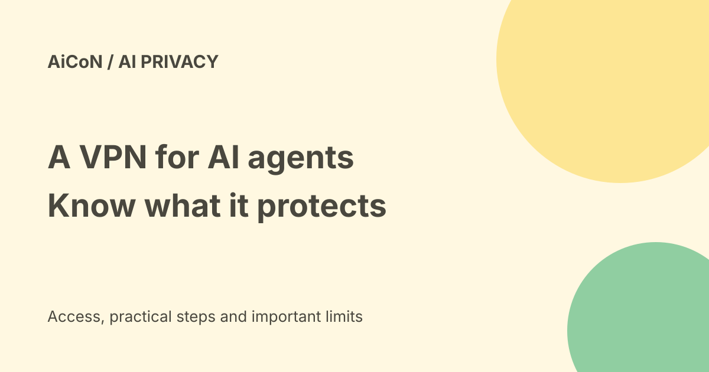

Bitdefender VPN for AI Agents: free Mac beta, with privacy limits
Bitdefender VPN for AI Agents gives supported agent traffic a separate encrypted route through its servers. The current external beta is free on supported Macs. It does not hide your prompts from the model provider, and the agent decides when to use it.

What does the VPN change?
A VPN changes the network route a request takes. The destination can see the VPN exit IP instead of your own IP for traffic routed through it. Bitdefender describes a new isolated container for each prompt, destroyed when the prompt ends, without carrying cookies, cache or session state to the next prompt.
Its page lists Claude Desktop, Cursor, Codex and OpenCode through Bitdefender's MCP tools. MCP is a way for AI clients to call connected tools. Do not assume installing it redirects every request from every app or browser. The page's own legal note limits that claim.
Current Mac requirements
| Stage | External beta. |
|---|---|
| Computer | Apple silicon, M1 or later. Intel Macs are not supported. |
| Operating system | macOS 13 or later; macOS 15 or later recommended. |
| Storage | About 10 GB free, according to the beta requirements. |
| Windows | To follow, not currently listed as available. |
The downloadable disk image being small does not mean the full container setup needs only that amount of space. Check the current requirements before installing. No phone, Linux or Intel-Mac build was verified here.
Is it free forever?
No such promise is made. The current page says free during beta, with no traffic caps, using its own sign-in and no other Bitdefender subscription required. It says pricing decisions may follow usage data. Future price and entitlement were not verified.
The FAQ says the external beta starts September 16 and runs for one month. That is a time-limited test, not an open-ended free plan. Recheck the page before downloading or relying on continued access. The current beta targets individual developers and freelancers, not organisations with central management, SSO or MDM.
What it does not protect
The model provider still receives the prompts and account identity you send. Do not put confidential data into a hosted model solely because a VPN is on. Logged-in accounts and information inside a request can still identify you; network IP masking does not make all activity anonymous.
Bitdefender says telemetry collection follows its privacy policy. Read that policy and the installer consent rather than assuming there is no telemetry. We did not install the beta, capture network traffic or verify its isolation design. The per-prompt container behaviour is the vendor's description.
A careful first test
- Check the current official beta page, supported Mac and terms. The legal text says users must be over 16.
- Use the official download from that page. Review permissions, sign-in and telemetry consent.
- Select a supported agent and inspect its Bitdefender MCP connection.
- Try a harmless browsing task with no private data. Verify which tool and route the agent actually used.
- Review the result, failure behaviour and overhead before trusting it for more work. Keep sensitive prompts out of the test.
We did not download, install, sign in or connect an agent. An Indian signup and exit-country list were not tested. Features and regional availability may vary, per Bitdefender's own note.
Failure and acceptable use
The FAQ says a failed tunnel drops the request inside its container rather than silently falling back to your IP. The agent may retry, stop or ask whether to continue without the VPN. This does not establish that unrelated requests outside the VPN tools are protected.
A different exit IP does not permit breaking a website's rules. The page says bypassing rate limits, bans or scraping restrictions violates its acceptable-use policy and can end beta access. Use regional routing for legitimate testing, not to evade limits. Some connection overhead is expected; measured beta latency was not published on the cited page.
Frequently asked questions
Does it hide prompts from Claude?
No. Bitdefender's FAQ explicitly says it does not.
Can Windows users install it now?
The current page says macOS first, Windows to follow.
Must I already pay for Bitdefender?
The beta page says it is standalone and free during beta.
What changed since the earlier post?
The earlier post called it a September 23 public beta. The current product FAQ calls it external beta and gives September 16 as its start, for one month. This guide uses the current source and adds hardware, telemetry, routing-coverage and post-beta cost caveats.
Sources: Current product page and FAQ · Product page Markdown. Checked 7 October 2026.